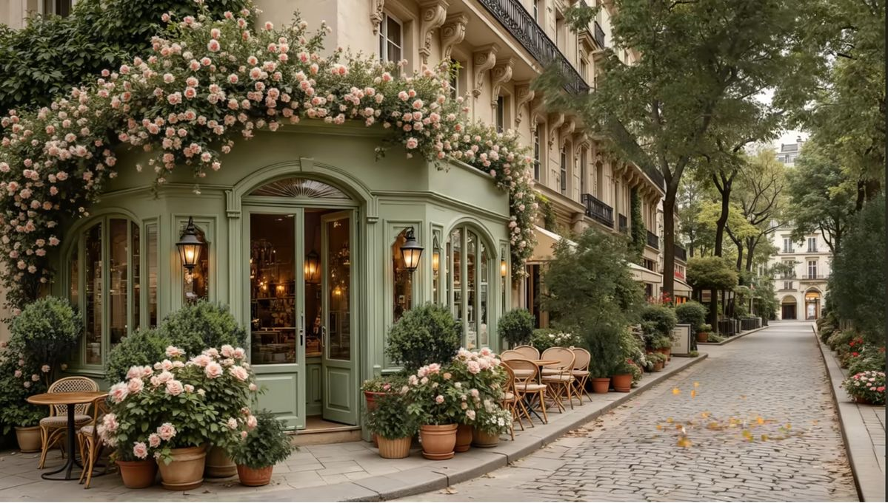
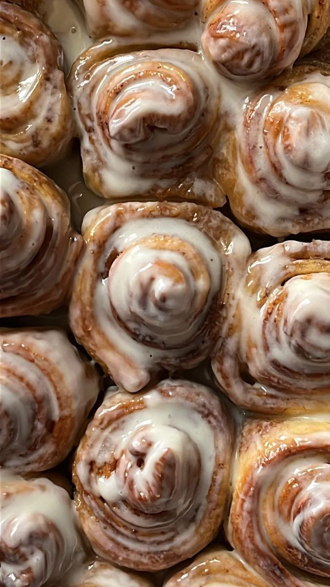
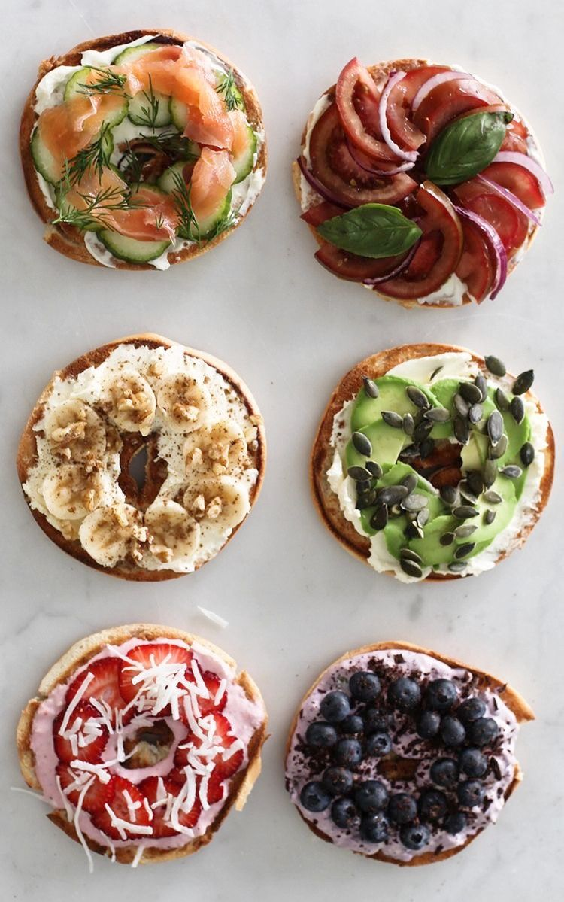
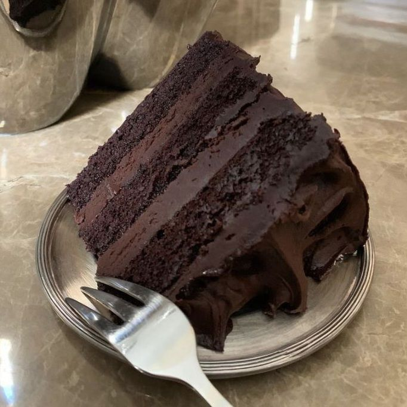
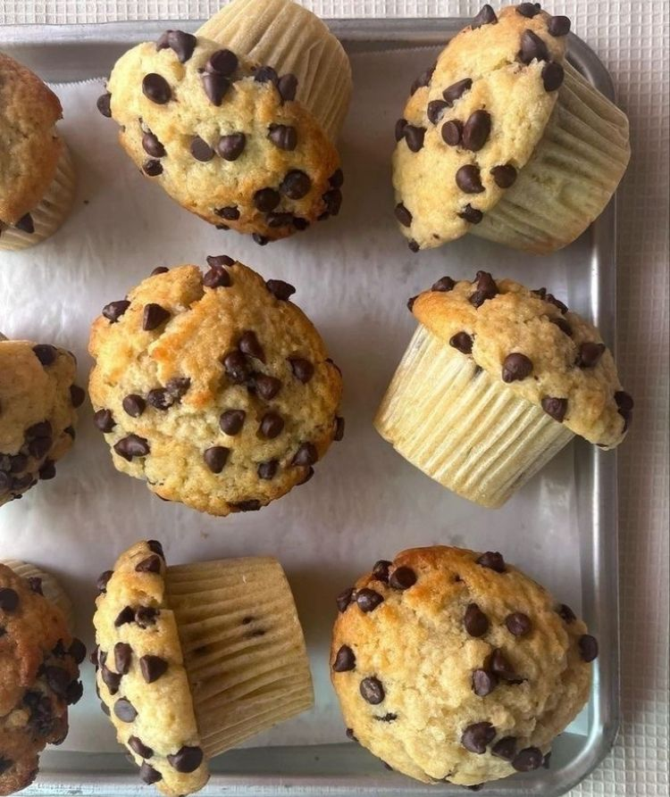
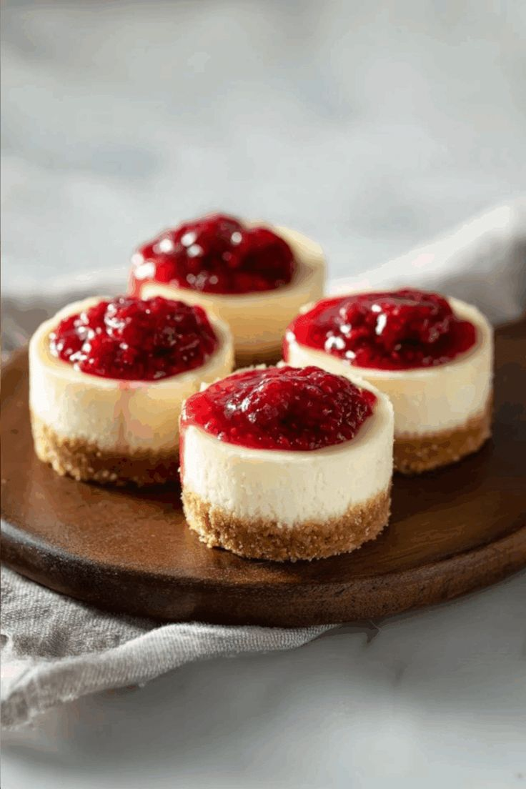
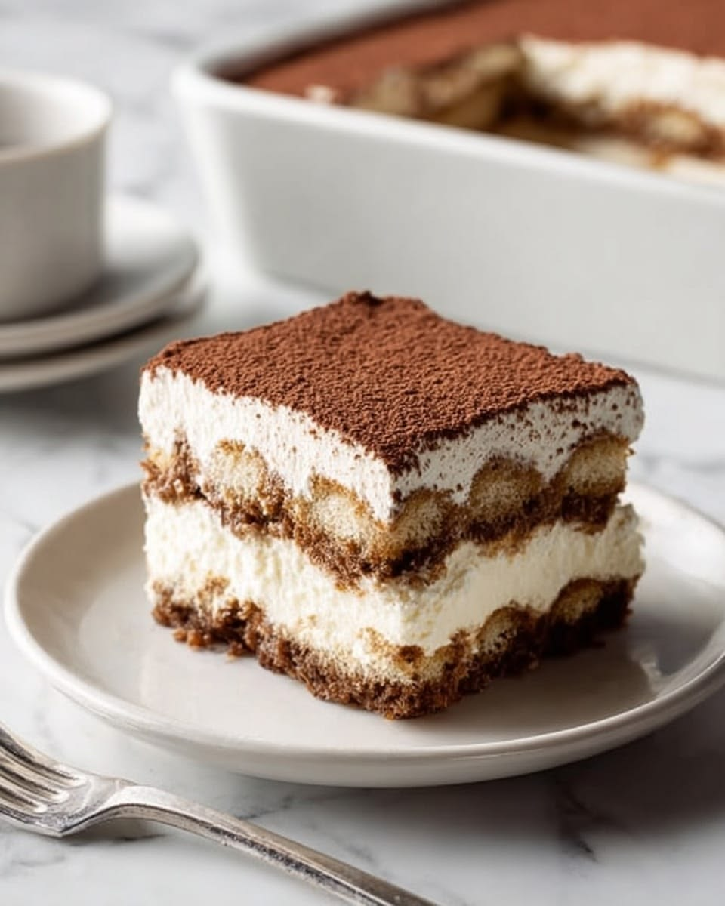

About us
Artigio Bakery is a small local bakery dedicated to fresh pastries and artisan breads. Even though our location is small, our promise is nothing alike, being one of the people's favorites. Come taste for yourself one of our delicacies or just have a look at our parisian-style bakery. You can find us at Bulevardul Vasile Pârvan Nr. 3, Timișoara every week day during 9:00 a.m. - 5:00 p.m. and on the weekends during 10:00 a.m. - 4:00 p.m.

Choose from our variety of specialties

Cinnamon rolls

Savory bagels

Chocolate cake

Muffins

Mini cheesecakes

Tiramisu
What makes us special?
We prepare our pastries and breads daily to bring you the best taste and texture. Our high-quality ingredients ensure that every bite is rich, fresh, and memorable. If you choose to visit Artigio Bakery you will find more than a shop. Our bakery is a cozy place where simple daily breaks turn into special moments.